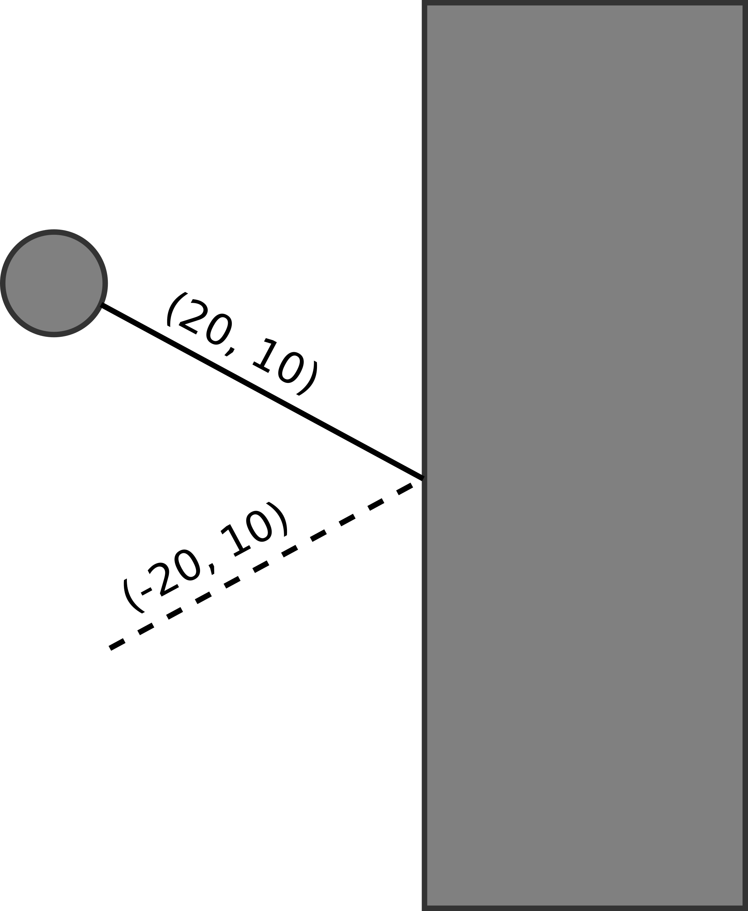

Vektoren
Mithilfe von Vektoren können Orte innerhalb eines Koordinatensystems angegeben werden. Es gibt 3 Arten von Vektoren:
- Ortsvektoren: Ortsvektoren gehen vom Null-Punkt des Koordinatensystems aus und geben an, wo ich ein bestimmter Punkt befindet.
- Richtungsvektoren: Richtungsvektoren geben an, wie man von einem beliebigen Punkt im Koordinatensystem zu einem anderen Punkt im Koordinatensystem kommt.
- Einheitsvektoren: Einheitsvektoren sind Vektorenm welche die Länge 1 haben. Einen Orts- oder Richtungsvektor zu normalisieren bedeutet ihn auf die Länge 1 umzurechnen.
Ortsvektor
Angenommen wir haben einen Punkt P(4|5), dann könnte mein "Ortsvektor" in Processing so aussehen:
float ortsVektorX = 4;
float ortsVektorY = 5;Die x- und y-Koordinaten können einfach in 2 Variablen gespeichert werden. Das ist die einfachste Möglichkeit. Es gibt auch noch den Datentyp PVector, speziell für Vektoren, dazu aber später mehr.
Richtungsvektor
Angenommen wir haben eine Spielfigur in (4|5) und ein Ziel in (7|2). Um die Spielfigur an die Zielkoordinaten zu bewegen muss ich auf der X-Asche 4 + 3 = 7 rechnen und auf der Y-Achse 5 - 3 = 2. Oder anders formuliert: Ich muss den Startpunkt vom Zielpunkt abziehen, also für x: 7 - 4 = 3 und für y: 2 - 5 = -3;
Der Richtungsvektor würde also folgendermaßen aussehen:
// Position der Spielfigur
float spielFigurX = 4;
float spielFigurY = 5;
// Zielposition
float zielX = 7;
float zielY = 2;
// Richtungsvektor
float richtungsVektorX = zielX - spielFigurX ;
float richtungsVektorY = zielY - spielFigurY ;
// Richtungsvektor auf Position der Spielfigur addieren, um zum Ziel zu kommen
spielFigurX = spielFigurX + richtungsVektorX; // = zielX
spielFigurY = spielFigurY + richtungsVektorY; // = zielYEinheitsvektor
Unseren Richtungsvektor können wir auch normalisieren, sprich auf die Länge 1 setzen. Damit erhalten wir einen Einheitsvektor.
Um die aktuelle Länge des Vektors zu berechnen, können wir den Satz des Pythagoras verwenden:
a² + b² = c² // a = richtungsVektorX, b = richtiungsVektorY
3² + -3² = c²
9 + 9 = c²
18 = c²
4,2 = cNun weiß ich wie lang mein Vektor aktuell ist. Um den Vektor zu normalisieren, muss ich nun nur meine Ausgangswerte a & b (was in Koordinaten dem x- & y-Wert entspricht) durch die Länge teilen:
(a/4,2)² + (b/4,2)² = c²
0,7² + -0,7² = c²
0,49 + 0,49 = c²
0,98 = c²
0,98 = cfloat einheitsVektorX = richtungsvektorX / 4,2;
float einheitsVektorY = richtungsvektorY / 4,2;Das Ergebnis ist nun nicht genau 1, weil ich die Werte zur einfacheren Darstellung stark gerundet habe. Wenn du willst, kannst du es zur Kontrolle selber gegenrechnen. Aber so einfach hast du aus einem Richtungsvektor einen Einheitsvektor gemacht.
Processing macht dir das Ganze sogar noch einfacher, indem es die Funktion dist() zur Verfügung stellt. Diese Funktion berechnet dir die Entfernung zwischen 2 Punkten, also die Länge des Richtungsvektors vom einen zum anderen Punkt.
Wir können also die Distanz (Länge des Richtungsvektors) zwischen Spielfigur und Ziel berechenen und dann den X- und den Y-Wert des Richtungsvektors durch die Distanz teilen. Die X- und Y-Werte berechnen wir, indem wir die aktuelle Position von der Zielposition abziehen:
// Distanz bzw. Länge berechnen
float distanz = dist( spielFigurX, spielFigurY, zielX, zielY);
// Richtungsvektor durch Distanz teilen und Einheitsvektor berechnen
float einheitsX = (zielX - spielFigurX) / distanz;
float einheitsY = (zielY - spielFigurY) / distanz;Und so schnell kann man mit 3 Zeilen Code einen Einheitsvektor berechnen. Aber die Frage ist: Was bringt das?
Warum Vektoren normalisieren?
Normalisierte Vektoren sind universell einsetzbarer als unnormalisierte.
Stell dir vor, du möchtest deine Spielfigur steuern, indem du im Spielfeld auf einen Punkt klickst und sich die Figur langsam dorthin bewegt. Du könntest hier einfach den unnormalisierten Richtungsvektor nehmen und jeden 1% des Richtungsvektors auf die Position der Spielfigur addieren, dann wäre die Spielfigur nach 100 Frames am Ziel. Allerdings würde sie sich je nachdem, wie weiter der Zielpunkt weg ist, unterschiedlich schnell bewegen. Bei einem Langen Richtungsvektor wäre sie schneller, bei einem kurzen wäre sie langsamer. Das kann mit Einheitsvektoren nicht passieren, da sie alle dieselbe Länge haben. Besser wäre es also, wenn du in dem Moment, wo du klickst und somit das Ziel setzt, den Einheitsvektor Richtung Ziel berechnen und einfach jeden Frame den Einheitsvektor auf die Position der Spielfigur addieren, bis sie an den Zielkoordinaten angekommen ist. Das Tempo wäre immer gleich, da alle Einheitsvektoren dieselber Länge haben.
Einheitsvektoren werden oft verwendet, um eine Richtung anzugeben, keine konkrete Strecke.
Aber sich jeden Frame genau 1 Pixel nach vorne bewegen ist schon etwas langsam - geht das nicht schneller? Auch das ist mit Einheitsvektoren kein Problem: In dem wir entweder die Länge des Vektors oder den x- und y-Wert mit einer anderen Zahl multiplizieren, können wir die Geschwindigkeit anpassen.
Vom Einheitsvektor zum Einheitskreis
Ein Einheitskreis ist ein Kreis mit dem Radius 1. Also so, als würdest du mit einem Zirkel einen Kreis mit dem Radius 1cm zeichnen. Jeder Punkt auf der Kreislinie hat dann den Abstand 1cm zur Mitte. Das heißt: Die Koordinaten von jedem Punkt beschreiben einen Einheitsvektor, mit dem ich etwas in genau die Richtung des Punktes auf der Linie bewegen kann. Nur müssen diese Koordinaten erst ausgerechnet werden.
Um die Koordinaten auf dem Kreis und somit den Einheitsvektor ausrechnen zu können, benötigen wir nur ein Winkel. Mithilfe von Kosinus (für x) und Sinus (für y) können wir den Einheitsvektor berechnen:
float einheitsX = cos(radians(winkel));
float einheitsY = sin(radians(winkel));Sobald wir den Einheitsvektor haben, können wir ihn einfach auf die Koordinaten des Kreismittelpunkts addieren, um den Kreismittelpunkt in diese Richtung zu addieren.
xKreis = xKreis + einheitsX;
yKreis = yKreis + einheitsY;Auf diese Weise kannst du mithilfe von Einheitsvektoren etwas in eine Richtung bewegen. Schau dir folgendes Programm unten an. Hier wird der Kreis jeden Frame ein Stück in Richtung winkel geschoben. Probiere mit dem Programm ein wenig herum:
- Was passiert, wenn du andere Winkel einsetzt?
- Wie kannst du die Geschwindigkeit anpassen, mit der sich der Kreis bewegt? (Tipp: es gibt 2 unterschiedliche Möglichkeiten)
float winkel = 34;
float xKreis = 100;
float yKreis = 100;
void setup() {
size(200, 200);
frameRate(20);
}
void draw() {
float einheitsX = cos(radians(winkel));
float einheitsY = sin(radians(winkel));
xKreis = xKreis + einheitsX;
yKreis = yKreis + einheitsY;
ellipse(xKreis, yKreis, 20, 20);
}Vektoren mit PVector
Du kannst, wenn du willst, so wie oben beschrieben mit den Vektoren arbeiten, also indem du den x- und den y-Wert in jeweils einer Variable speicherst. Allerdings bietet dir Processing auch den Datentyp PVector, der ein paar Dinge noch einfacher macht, da er dafür gedacht ist Vektoren zu speichern und zu verarbeiten.
PVector ist eine Klasse mit deren Hilfe zwei- oder auch dreidimensionale Vektoren gespeichert und verarbeitet werden können.
Die Vektoren von oben können mit PVector folgendermaßen erstellt werden:
PVector spielFigurPos = new PVector(4, 5); // Ortsvektor der Spielfigur
PVector zielPos = new PVector(7, 2); // Ortsvektor des Ziels
println("Spielfigur X: " + spielFigurPos.x + " Y: " + spielFigurPos.y); // So kannst du auf die einzelnen Werte zugreifenDie Klasse PVector hat auch ein paar hilfreiche Methoden (ähnlich, die bei der Klasse String in Strings verarbeiten), die du verwenden kannst, zum Beispiel:
- add() & sub(): mit diesen Funktionen können Vektoren addiert bzw. subtrahiert werden.
- Bsp.:
PVector richtungsVektor = PVector.sub(zielPos, spielFigurPos);
- Bsp.:
- dist(): Berechnet die Distanz zwischen zwei Vektoren.
- Bsp.:
float distanz = zielPos.dist(spielFigurPos);
- Bsp.:
- normalize(): Normalisiert eine Vektor.
- Bsp.:
PVector einheitsVektor = richtungsVektor.normalize();
- Bsp.:
- mag(): Berechnet die Länge eines Ortsvektors in Bezug zum Mittelpunkt (0|0).
- Bsp.:
float laenge = spieFigurPos.mag();
- Bsp.:
Diese Methoden können wir verwenden, um mit der Klasse PVector unseren Richtungsvektor zu normalisieren:
PVector spielFigurPos = new PVector(4, 5); // Ortsvektor der Spielfigur
PVector zielPos = new PVector(7, 2); // Ortsvektor des Ziels
PVector einheitsVektor = PVector.sub(zielPos, spielFigurPos);
einheitsVektor.normalize();
Weitere Infos findest du in der Dokumentation von PVector.
Abprallen
Mithilfe der Einheitsvektoren kann man nicht nur Richtung und Geschwindigkeit realisieren, sondern auch das Abprallen von etwa. Für das Abprallen gilt: Einfallswinkel = Ausfallswinkel.
Angenommen meine Spielfigur will gerade zu einem Ziel, das rechts unterhalb von ihr ist. Der Richtungsvektor zum Ziel ist zum Beispiel (20,10), sprich 20 Pixel nach rechts und 10 Pixel nach unten. Nun kollidiert die Spielfigur aber auf dem Weg zum Ziel mit dem rechten Spielfeldrand und prallt von ihm ab. Das bedeutet, dass sich die Richtung auf der X-Achse umkehrt, weil sie ja nicht weiter nach rechts fährt, sondern nach links abprallt. Auf der Y-Achse ändert sich nichts.
Das Bild zeigt: Die Spielfigur sich mit dem Richtungsvektor (20, 10) nach unten rechts, prallt ab und bewegt sich mit (-20, 10) weiter.

Für das Abprallen gilt also:
- Wenn ich auf der X-Achse kollidiere, muss ich den X-Wert des Richtungsvektors umkehren, um abzuprallen.
- Wenn ich auf der Y-Achse kollidiere, muss ich den Y-Wert des Richtungsvektors umkehren, um abzuprallen.
Achtung: Wie bereits oben erähnt, macht ihr das aber am besten mit euren Einheitsvektoren, nicht mit den Richtungsvektoren. Ich habe nur zur einfacheren Verständlichkeit die Werte eines Richtungsvektors verwendet!
Beschleunigung
Für die Beschleunigung könnt ihr die Formel für eine gleichmäßig beschleunigte Bewegung nehmen - das Geschwindigkeit-Zeit-Gesetz:
vneu = a · t + valt
- vneu ist die Geschwindigkeit
- a ist die Beschleunigung
- t ist die Zeit (Differenz aus dem Frame, in dem ich angefangen habe zu beschleunigen und jetzt)
- valt ist die Anfangsgeschwindigkeit (vom letzten Frame)